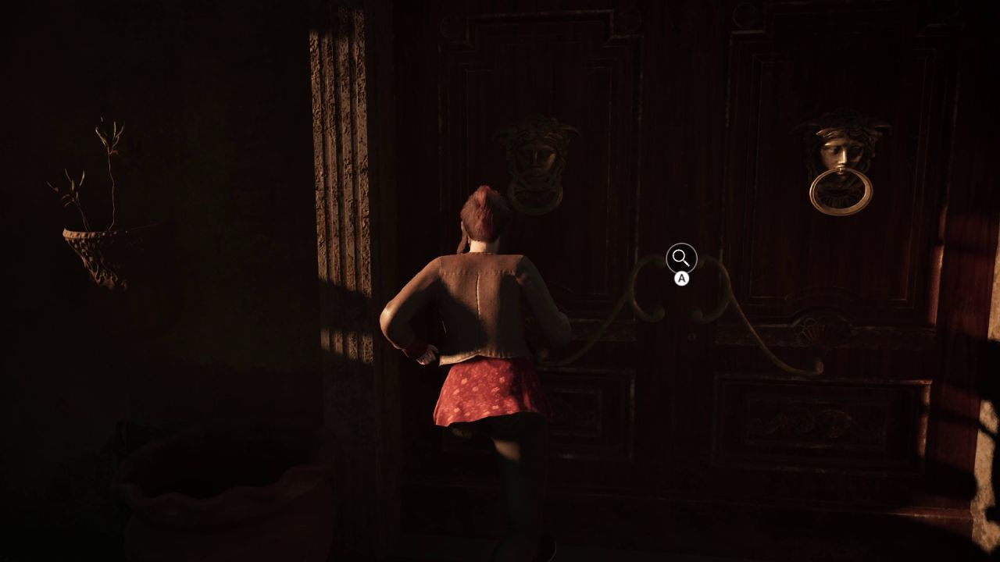
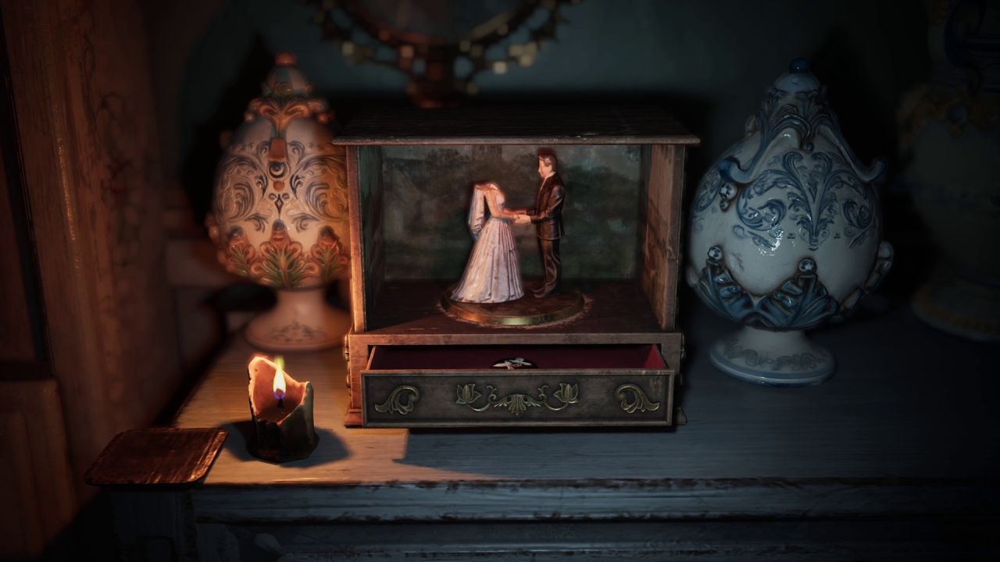
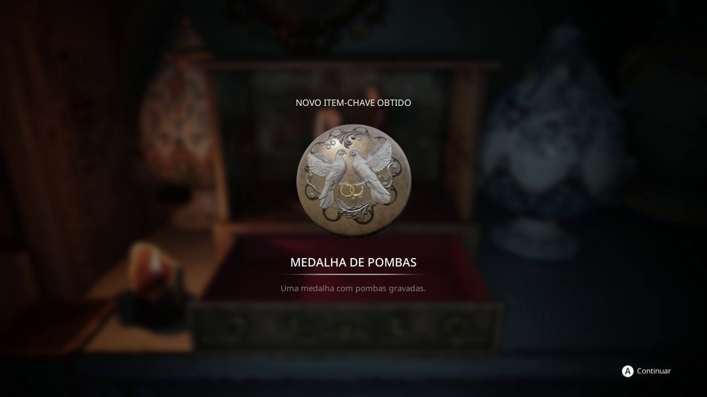
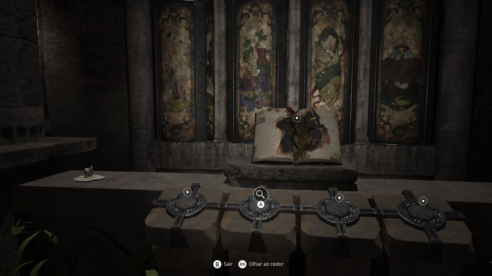
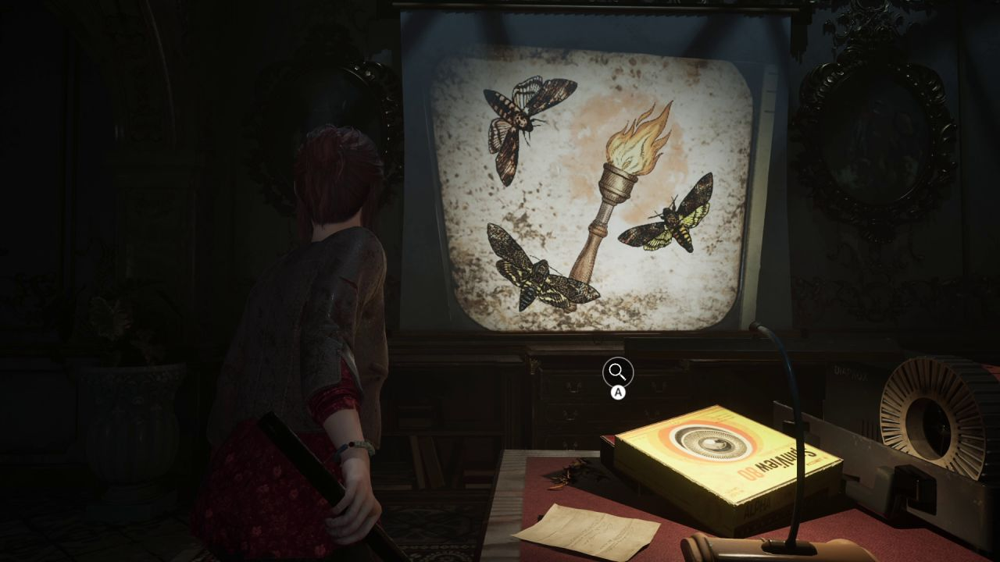
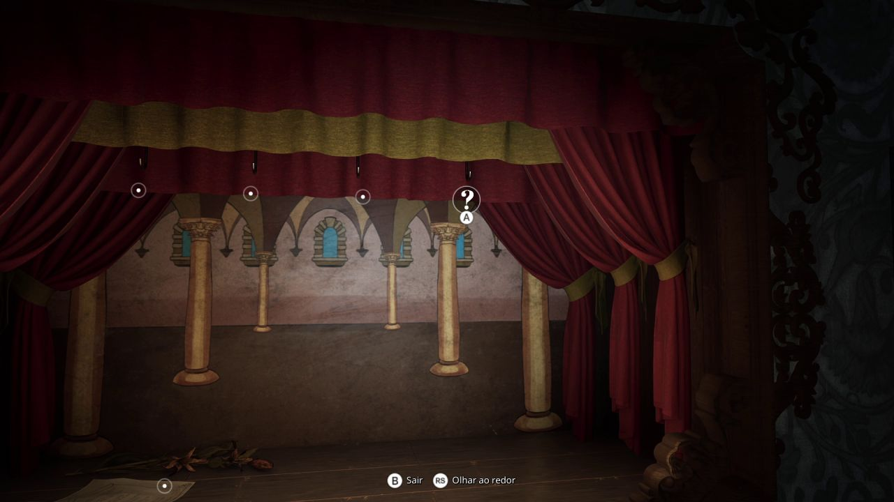
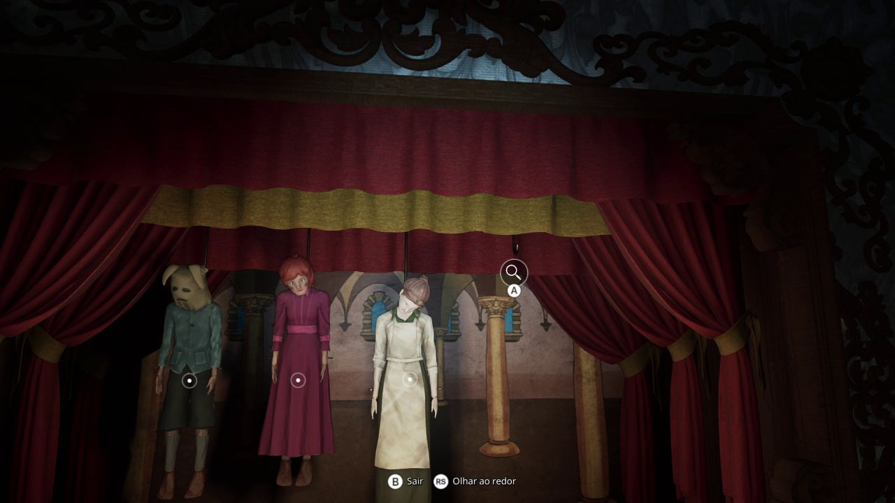
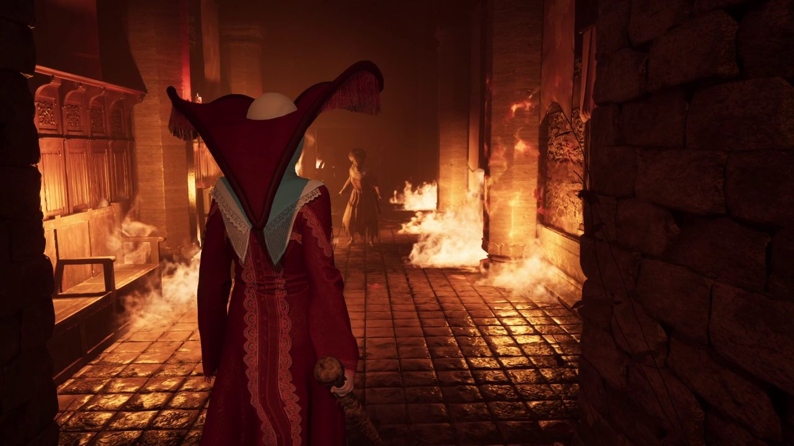

Aviso de spoilers. Esta guía recorre toda la campaña de Remothered: Red Nun's Legacy, desde la llegada a Villa Ashmann hasta el final. Incluye la solución de todos los acertijos y consejos para huir de las acosadoras. Los nombres de los objetos son traducciones nuestras; nuestros videos están en portugués de Brasil, así que el texto de las capturas aparece en portugués. Todas las imágenes vienen del gameplay de Bora de Play.
Cómo usar esta guía
Primera partida. Sigue los capítulos en orden. El juego no tiene combate real, así que lo más importante es saber adónde ir antes de abrir una puerta. Cada metrónomo guarda la partida; úsalo siempre que pases por uno. Camina con la linterna apagada cuando puedas: las monjas ven la luz desde lejos.
¿Ya estás jugando? Busca en la tabla el punto donde te atascaste y ve directo a la solución.
| Dónde me atasqué | Ir a |
|---|---|
| No sé cómo entrar en la villa | Llegada a Villa Ashmann |
| Caja de música o Medalla de Palomas | Sala delle Meraviglie y la biblioteca |
| Planta que bloquea la puerta o pilares que giran | El convento y el primer acertijo de los pilares |
| Combinación de la caja fuerte | Caja fuerte: 73, 31, 52 |
| Espejos, cuarto de Lindsay o pilares con espejo | Secretos en los espejos |
| Ala residencial, puerta del Eclipse o la Novia | Ala residencial |
| Dando vueltas sin encontrar la salida | La escalera que confunde |
| Orden de las marionetas | Montacargas y marionetas |
| Pilares de las llamas o puerta alquímica | Pilares de las llamas y puerta alquímica |
| Cuerda, polea y tramo final | Catacumbas y final |
Ruta de la campaña
- Llegada a Villa Ashmann
- Sala delle Meraviglie y la biblioteca
- El convento y el primer acertijo de los pilares
- La caja fuerte de la familia y la puerta principal
- Secretos en los espejos
- Ala residencial y la Novia
- Bodega, metrónomo roto y polillas
- Montacargas y marionetas
- Pilares de las llamas y puerta alquímica
- Catacumbas y final
Cómo sobrevivir a las acosadoras
- Escóndete pronto. Sofás, armarios y camas sirven de escondite. Quédate quieto hasta que termine la música tensa y los pasos se alejen.
- Linterna apagada. Ven la luz desde el final del pasillo. Enciéndela solo para leer o buscar objetos.
- Objetos de defensa. Tijeras, clavos y objetos arrojadizos sirven para escapar cuando una de ellas te atrapa. Las armas improvisadas, como palas y barras de hierro, empujan a la enemiga y también bloquean golpes, pero se desgastan con el uso. Llevas un objeto de cada tipo a la vez.
- No corras porque sí. Correr hace ruido y atrae a quien esté cerca. Corre solo cuando ya te hayan visto.
1. Llegada a Villa Ashmann
Objetivo: entrar en la villa y pasar por la primera visita al convento.
- Las puertas principales están atascadas. Rodea la entrada por la izquierda hasta la rejilla del suelo, baja y sigue por el pasaje subterráneo. Al salir del foso ya estás dentro de la villa.
- Lee el recorte de periódico sobre la desaparición de Agata. Cuando oigas que alguien se acerca, escóndete debajo del mueble destacado y espera.
- Interactúa con el metrónomo de la sala. Lleva a Susan al convento. Recoge la Llave Oxidada (la etiqueta dice Gloria) junto a la cama y sigue por el pasillo de las cunas hasta la escena de la Monja Roja.
- De vuelta en la villa, el tutorial explica que los metrónomos guardan la partida y desbloquean poderes. El primero permite esconderse debajo de los sofás.


2. Sala delle Meraviglie y la biblioteca
Objetivo: completar la caja de música y llevar la medalla al metrónomo.
| Dónde | Qué hago | Cómo sé que funcionó |
|---|---|---|
| Galería de arte, armario junto a la chimenea | Toma la llave de la puerta de la rosa de los vientos. | Se abre la puerta con la rosa de los vientos. |
| Sala delle Meraviglie (sala de las maravillas) | Abre el libro azul del tocador para encontrar la llave de la biblioteca. | La biblioteca queda accesible. |
| Biblioteca, mesa del proyector | Lee la nota con la pista de la caja fuerte. Queda guardada en el inventario. | El proyector avisa que faltan las diapositivas. Llegan en el capítulo 4. |
| Piso de arriba de la biblioteca | Toma la Figurita del Novio de la mesita. Vuelve por el balcón, porque la puerta de abajo se cierra. | El objeto aparece en el inventario. |
| Caja de música de la galería | Coloca al novio junto a la novia. | El cajón suelta la Medalla de Palomas. |
| Metrónomo de la jaula, en el salón de recepción | Usa la medalla en el metrónomo encerrado en la jaula. | Susan vuelve al convento. |
En esta zona, una monja empieza a vigilar la biblioteca desde el entrepiso y otra baja por la escalera. En nuestro gameplay, el encuentro más peligroso fue salir de un armario con ella parada en la puerta. Antes de dejar el escondite, espera a que la música se calme.



3. El convento y el primer acertijo de los pilares
Objetivo: liberar el paso tomado por la planta y resolver los pilares.
- En el convento, la retrocognición muestra recuerdos del pasado. Úsala en los puntos brillantes para oír las voces y abrir el camino.
- Una planta bloquea la puerta. Sigue el recuerdo del pasillo para encontrar el Fluido Misterioso y úsalo en la planta.
- En la sala de los cuatro pilares, lee el libro del pedestal. Cada pilar gira con una serie de figuras. Detén cada uno en la figura correcta, de izquierda a derecha: Mujer, Serpiente, Calavera y Corazón.

4. La caja fuerte de la familia y la puerta principal
Objetivo: encontrar las diapositivas, abrir la caja fuerte de Boris Ashmann y desbloquear la puerta principal.
- La puerta del despacho de la biblioteca no tiene pomo. Ve a los baños (hammam), cerca del salón de recepción, y golpea tres veces el mosaico de las ninfas en la cascada. El pomo cae del mosaico. En nuestro gameplay, una segunda monja dormía allí y se despertó con el ruido. Ten un objeto de defensa a mano.
- Coloca el pomo en la puerta del despacho, junto a la escalera de la biblioteca. Toma las diapositivas del escritorio y ponlas en el proyector.
- Las diapositivas muestran pares de figuras. Suma cada par: pájaros con flores, polillas con llamas, peces con hojas.
Caja fuerte: 73, 31, 52
| Diapositiva | Conteo | Número |
|---|---|---|
| Pájaros y flores | 7 pájaros y 3 flores | 73 |
| Polillas y llamas | 3 polillas y 1 llama | 31 |
| Peces y hojas | 5 peces y 2 hojas | 52 |
En nuestra versión en portugués, la nota hablaba de árboles y flores, pero la diapositiva muestra pájaros. Usa los pájaros. La caja fuerte está detrás del cuadro de pájaros en vuelo, en la Sala delle Meraviglie: empuja el cuadro hacia un lado y gira el disco hasta 73, 31 y 52. Dentro están la carta de Boris y el Anillo de la Familia Ashmann.
Usa el anillo en la puerta cerrada que lleva afuera y corre hasta el coche. La escena siguiente devuelve a Susan a la villa, ahora con una nueva acosadora.


5. Secretos en los espejos
Objetivo: obtener el poder de los espejos, entrar en el cuarto de Lindsay y recuperar el collar.
- Inspecciona el metrónomo del escenario. Desbloquea Secretos en los Espejos: mira a través de los espejos para revelar puertas, llaves y objetos ocultos en el reflejo.
- En el pasillo de las monjas, usa el espejo para encontrar el compartimento con la llave del cuarto de la Hermana Lindsay (Suor Lindsay). En el cuarto, recoge la Figurita de Jesús y colócala en el hueco vacío de la puerta doble.
- La sala siguiente repite el acertijo de los pilares, pero las figuras son invisibles. Ve al espejo del fondo de la sala y mira a través de él. Cada pilar muestra su figura en el reflejo; detén cada uno cuando la figura quede de frente.
- Toma el Collar Artesanal de la caja y colócalo en la estatua de la monja de la sala de al lado. La escena te devuelve a la villa.

6. Ala residencial y la Novia
Objetivo: entrar en el ala residencial y empezar a reunir las marionetas.
- Sigue los espejos por la mansión: revelan pasajes nuevos, incluido uno por la chimenea de la galería. La Novia, nueva acosadora, ronda esta parte. Es más lenta que la monja, pero se oyen sus cadenas y sus pasos. Espera escondido a que pase.
- En la sala de investigación, la Llave de la Corona está entre las fotos colgadas del tendedero. Úsala en la salida de la luz roja.
- La puerta del ala residencial está cerrada. Entra por la ventana junto a los barriles, baja a la lavandería y sube para ver la puerta del Eclipse. La llave de Gloria está en el estudio del cuarto de Stefano, al que llegas arrastrándote por la abertura baja del baño.
- En el cuarto de juguetes, el espejo revela el pequeño teatro. Ahí está La Hija, la primera marioneta. La nota del teatro explica que los ganchos solo aceptan las marionetas en el orden correcto.
- En el cuarto destruido, usa el espejo en la estatua para tomar El Padre. Atención: en esta zona aparece una monja con lanzallamas. Si no te ha visto, quédate escondido y espera.

7. Bodega, metrónomo roto y polillas
La escalera que confunde
En nuestro gameplay, esta parte nos atascó un episodio entero. El ala tiene dos escaleras que bajan y se parecen. Una termina en una puerta cerrada sin nada detrás. La otra lleva a la bodega y al resto de la zona. Si solo encuentras puertas cerradas, vuelve y baja por la otra escalera.
- En la bodega, junto al metrónomo roto, toma la llave pequeña con llavero musical.
- Úsala en la caja de la sala de música y toma el brazo del metrónomo.
- Instala el brazo en el metrónomo roto. Desbloquea la Manipulación de Polillas: interactúa con un nido para guiar a las polillas durante un tiempo limitado y úsalas en los capullos que bloquean puertas y pasajes.
A partir de aquí, la monja suelta polillas que te atrapan. Para soltarte, pulsa muy rápido el botón indicado. Aprovecha el tiempo de las polillas para ir directo al capullo; no te detengas a explorar por el camino.
↑ Índice8. Montacargas y marionetas
Objetivo: completar las cuatro marionetas y abrir la puerta secreta.
- Toma la palanca e instálala en el montacargas del comedor del piso de arriba. Acciónalo para dejar caer la marioneta de la Madre en la cocina, un piso más abajo.
- La Madre está rota. Llévala al banco de trabajo y repárala con el poder de las polillas.
- El Hijo está en el compartimento del motor del cochecito amarillo de juguete.
- En el teatro, cuélgalas de izquierda a derecha: Madre, Padre, Hijo e Hija. La puerta secreta se abre al lado.

9. Pilares de las llamas y puerta alquímica
Objetivo: abrir la puerta alquímica del salón de recepción.
- Primero guía a las polillas para liberar los controles. Después gira los cuatro pilares hasta que todos muestren la llama de frente.
- Lee el poema de los cuatro signos. Da el orden de los símbolos de la puerta: Calavera, Agua, Sol naciente y Corazón. No toques el fuego ni la luna.
- El mecanismo está en la capilla. En nuestro gameplay, la puerta no reaccionaba porque faltaba pulsar un botón de piedra en el centro del mecanismo, casi invisible. Si no pasa nada, busca ese botón.
- Activa los cuatro símbolos en orden. La puerta misteriosa de la villa se abre.


10. Catacumbas y final
Objetivo: abrir la verja de las catacumbas y llegar al final.
- En las catacumbas todavía ronda una monja. Explora con la linterna apagada y localiza los escondites antes de avanzar.
- Reúne la cuerda y la polea. Una de ellas está detrás de un espejo cubierto por un capullo, y el nido de polillas más cercano queda lejos. Toma las polillas y ve en línea recta, sin detenerte, hasta el espejo.
- Sujeta la cuerda y la polea al mecanismo de la verja, cerca del punto de guardado, y acciónalo.
- Mira la secuencia final. Después de la escena, controlas a la Monja Roja y debes cazar a las tres novicias que huyen: una se esconde en un armario, otra debajo de un mueble y la última está más adelante, rezando. Usa los comandos de pulsar repetidamente cuando aparezcan.
- El juego tiene un único final. Quédate hasta el final: hay una escena después de los créditos.

Referencias de ruta y acertijos. Todos los acertijos — TPose Gaming, Tramo final — TPose Gaming, Guía, parte 2 — Into Indie Games.
↑ Volver arriba